Exercise
s-takano
set.seed(29)library(LearnBayes)2-1
事前分布の設定
p = seq(0, 1, by=0.125)
prior = c(0.001, 0.001, 0.950, 0.008, 0.008, 0.008, 0.008, 0.008, 0.008)
sum(prior)## [1] 1尤度関数
likelihood = function (p) p ^ 6 * (1 - p) ^ 4事後分布
posterior = c()
for (i in 1:length(p)) {
posterior = c(posterior, likelihood(p[i]) * prior[i])
}
posterior = posterior / sum(posterior)
round(cbind(p, prior, posterior), 3)## p prior posterior
## [1,] 0.000 0.001 0.000
## [2,] 0.125 0.001 0.000
## [3,] 0.250 0.950 0.730
## [4,] 0.375 0.008 0.034
## [5,] 0.500 0.008 0.078
## [6,] 0.625 0.008 0.094
## [7,] 0.750 0.008 0.055
## [8,] 0.875 0.008 0.009
## [9,] 1.000 0.008 0.0002-2
事前分布
midpt = seq(0.05, 0.95, by = 0.1)
prior = rep(0.1, 10) # 無情報事前分布
curve(histprior(x, midpt, prior), from = 0, to = 1)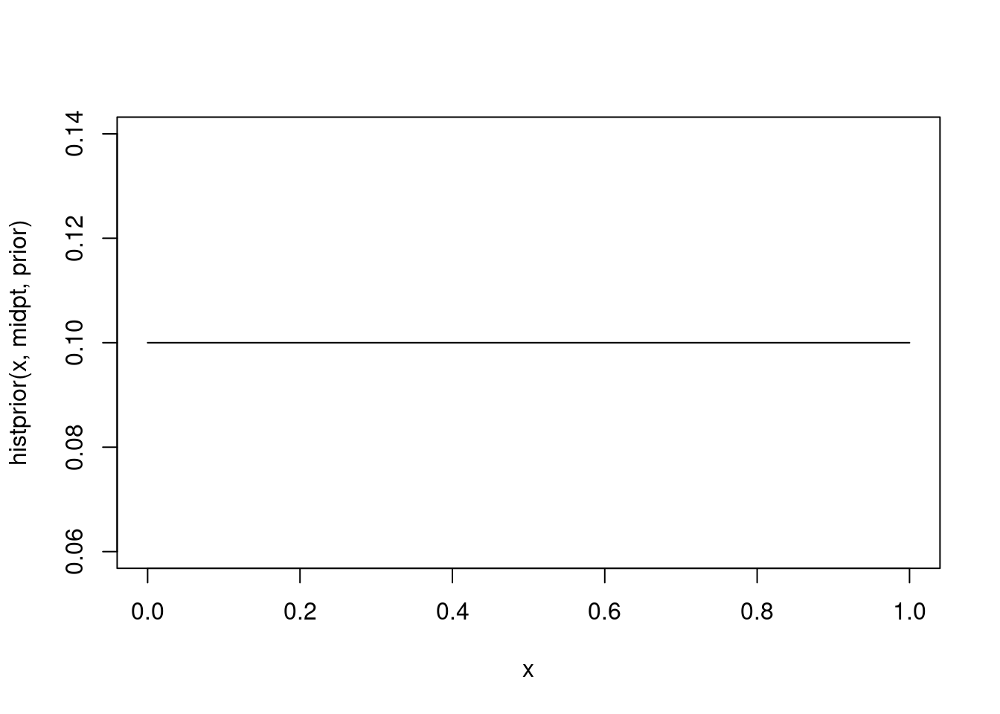
事後分布
p = seq(0, 1, length = 500)
posterior = c()
for (i in length(p)) {
min_idx = which.min(abs(midpt - p[i]))
posterior = c(posterior, dbeta(p, 10, 10) * prior[min_idx]) # コイン Head 10, Tail = 10
}
posterior = posterior / sum(posterior)
ps = sample(p, replace = TRUE, prob = posterior)
hist(ps)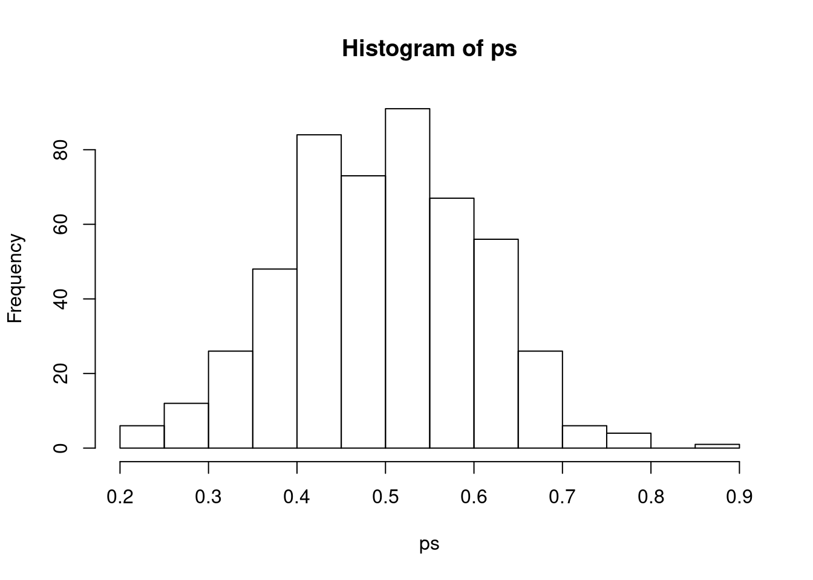
2-3
事前分布
p = seq(0, 1, length=100)
plot(p, dbeta(p, 1, 1), type ="l")
事後分布
p = seq(0, 1, length=100)
plot(p, dbeta(p, 23, 8), type ="l")
(a)
qbeta(c(0.5, 0.95), 23, 8)## [1] 0.7471911 0.8598149(b)
q = seq(0, 1, length=100)
plot(q, pbeta(q, 23, 8), type ="l")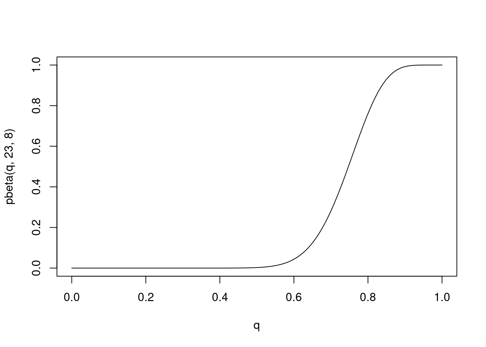
1 - pbeta(0.6, 23, 8)## [1] 0.9564759(c)
sample = rbeta(1000, 23, 8)
sample[1:100]## [1] 0.8070411 0.8255705 0.8477878 0.8108964 0.5317507 0.6689845 0.7476998 0.5928586 0.8221321 0.6747017
## [11] 0.8718341 0.6920089 0.6583218 0.6658947 0.7164831 0.7388286 0.7370553 0.6340145 0.5931665 0.8259576
## [21] 0.8674522 0.6588919 0.7786812 0.8250223 0.7543352 0.7646318 0.8076675 0.7075955 0.5620429 0.6311084
## [31] 0.7760624 0.7828018 0.8001533 0.7533651 0.7204592 0.7126806 0.6963089 0.7200499 0.7241966 0.6954281
## [41] 0.7771320 0.7758104 0.7877369 0.6878208 0.6566363 0.7038708 0.7457192 0.7594498 0.7318217 0.7833370
## [51] 0.7323663 0.7595893 0.8384151 0.7640964 0.7508796 0.7798371 0.8113989 0.7495155 0.7004356 0.8477141
## [61] 0.7682620 0.8378440 0.8100615 0.7901226 0.7423015 0.7588627 0.8255460 0.7433915 0.7981177 0.6595531
## [71] 0.6546487 0.7899955 0.8291286 0.7201989 0.7269412 0.8071294 0.6084613 0.7088205 0.5755315 0.5836573
## [81] 0.8408905 0.6462143 0.7539278 0.7029940 0.6070669 0.8072564 0.6368789 0.7252253 0.6867064 0.7091260
## [91] 0.7579631 0.7055456 0.7030036 0.7053452 0.6349164 0.5357193 0.7662252 0.8386757 0.6946933 0.7423767(d)
さらに、10人いる場合の高校を卒業する人数 \(X\) の予測分布を求める．
\[ p(x) = \int_{0}^{1} \binom{10}{x}p^{x}(1-p)^{10-x} Beta(p|23,8) dp \]
\[ \begin{aligned} p(X=9) &= \int_{0}^{1} \binom{10}{9}p^{9}(1-p)^{10-9} Beta(p|23,8) dp \\ &= \int_{0}^{1} 10 \cdot p^{9}(1-p) Beta(p|23,8) dp \\ &= \frac{10}{B(23, 8)} \int_{0}^{1} p^{9}(1-p) p^{22} (1-p)^{7} dp \\ &= \frac{10}{B(23, 8)} \int_{0}^{1} p^{31}(1-p)^{8} dp \\ &= \frac{10}{B(23, 8)} \int_{0}^{1} p^{32 - 1}(1-p)^{9 - 1} dp \\ &= \frac{10}{B(23, 8)} B(32, 9) \\ \end{aligned} \]
10 * beta(32, 9) / beta(23, 8)## [1] 0.1902656\[ \begin{aligned} p(X=10) &= \int_{0}^{1} \binom{10}{10}p^{10}(1-p)^{10-10} Beta(p|23,8) dp \\ &= \int_{0}^{1} p^{10} Beta(p|23,8) dp \\ &= \frac{1}{B(23, 8)} \int_{0}^{1} p^{10} p^{22} (1-p)^{7} dp \\ &= \frac{1}{B(23, 8)} \int_{0}^{1} p^{32}(1-p)^{7} dp \\ &= \frac{1}{B(23, 8)} \int_{0}^{1} p^{33 - 1}(1-p)^{8 - 1} dp \\ &= \frac{1}{B(23, 8)} B(33, 8) \\ \end{aligned} \]
beta(33, 8) / beta(23, 8)## [1] 0.07610622サンプリングすると以下のようにできる．
よって、このときの \(X = 9 \; or \; X = 10\) となる確率を求めれば良い.
\[ p \sim Beta(p|23, 8) \\ x \sim Bin(x|10, p) \]
p = rbeta(10000, 23, 8)
x = rbinom(10000, 10, p)
table(x) / 10000## x
## 1 2 3 4 5 6 7 8 9 10
## 0.0002 0.0024 0.0094 0.0322 0.0787 0.1480 0.2250 0.2493 0.1818 0.0730理論値と近い値となっていることが確認できる．
2-4
(a)
p = seq(0.1, 0.5, by=0.1)
p## [1] 0.1 0.2 0.3 0.4 0.5prior = c(0.50, 0.2, 0.2, 0.05, 0.05)
mean = sum(p * prior)
mean## [1] 0.195sd = sqrt(sum((p - mean)^2 * prior))
sd## [1] 0.1160819\(Beta(p|3, 12)\) の場合、サンプリング近似を行う.
sample = rbeta(10000, shape1 = 3, shape2 = 12)
mean(sample)## [1] 0.1993212sd(sample)## [1] 0.1002495(b)
通学者数 \(Y\) に関して、以下の予測分布が計算できる.
離散事前分布
\[ p(y) = \sum_p \binom{12}{y} p^{y} (1-p)^{12-y} g(p) \]
predict = c()
for (y in 0:12) {
p_y = 0
for (i in 1:length(p)) {
p_y = p_y + choose(12, y) * p[i]^y * (1 - p[i])^(12 - y) * prior[i]
}
predict = c(predict, p_y)
}
predict## [1] 0.1578479672 0.2447719936 0.2093137913 0.1475812240 0.1001416403 0.0652427436 0.0393037888 0.0212231429
## [9] 0.0098095892 0.0036170714 0.0009692955 0.0001645993 0.0000131530plot(0:12, predict, type = "l")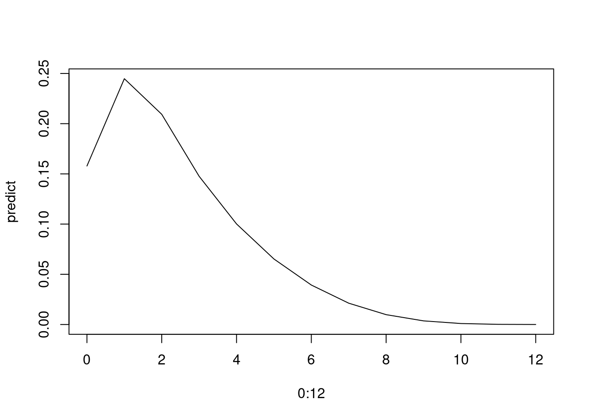
pdiscp(p, prior, 12, 0:12)## [1] 0.1578479672 0.2447719936 0.2093137913 0.1475812240 0.1001416403 0.0652427436 0.0393037888 0.0212231429
## [9] 0.0098095892 0.0036170714 0.0009692955 0.0001645993 0.0000131530plot(0:12, pdiscp(p, prior, 12, 0:12), type = "l")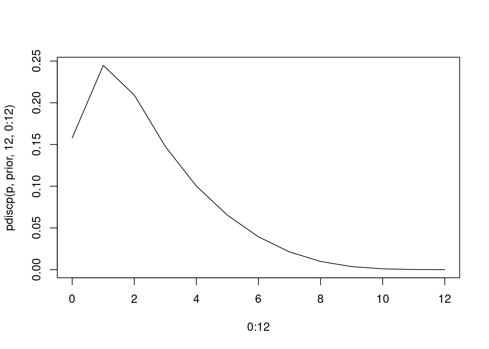
ベータ分布
\[ \begin{aligned} p(y) &= \int_0^1 \binom{12}{y} p^{y} (1-p)^{12-y} \frac{1}{B(3, 12)} p^{3 - 1} (1-p)^{12 - 1} dp \\ &= \binom{12}{y} \frac{1}{B(3, 12)} \int_0^1 p^{y + 2} (1-p)^{23-y} dp \\ &= \binom{12}{y} \frac{1}{B(3, 12)} B(y + 3, 24 - y) \\ \end{aligned} \]
predict = c()
for (y in 0:12) {
p_y = choose(12, y) * beta(y + 3, 24 - y) / beta(3, 12)
predict = c(predict, p_y)
}
predict## [1] 1.400000e-01 2.191304e-01 2.191304e-01 1.739130e-01 1.173913e-01 6.919908e-02 3.588101e-02 1.628214e-02
## [9] 6.360210e-03 2.072957e-03 5.330462e-04 9.691749e-05 9.422533e-06sum(predict)## [1] 1plot(0:12, predict, type = "l")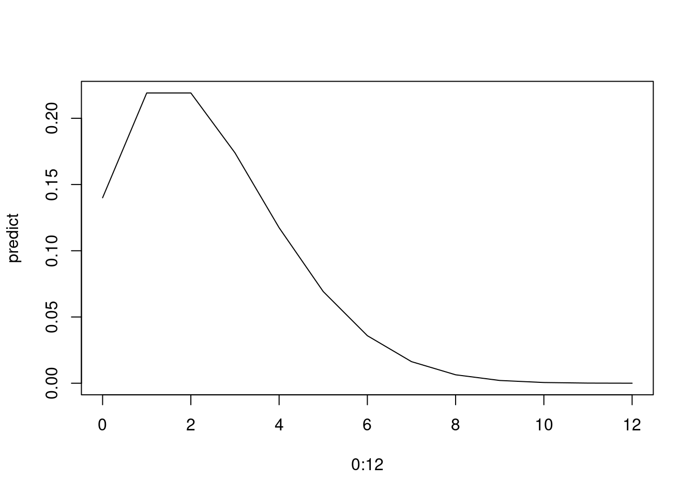
pbetap(c(3, 12), 12, 0:12)## [1] 1.400000e-01 2.191304e-01 2.191304e-01 1.739130e-01 1.173913e-01 6.919908e-02 3.588101e-02 1.628214e-02
## [9] 6.360210e-03 2.072957e-03 5.330462e-04 9.691749e-05 9.422533e-06plot(0:12, pbetap(c(3, 12), 12, 0:12), type = "l")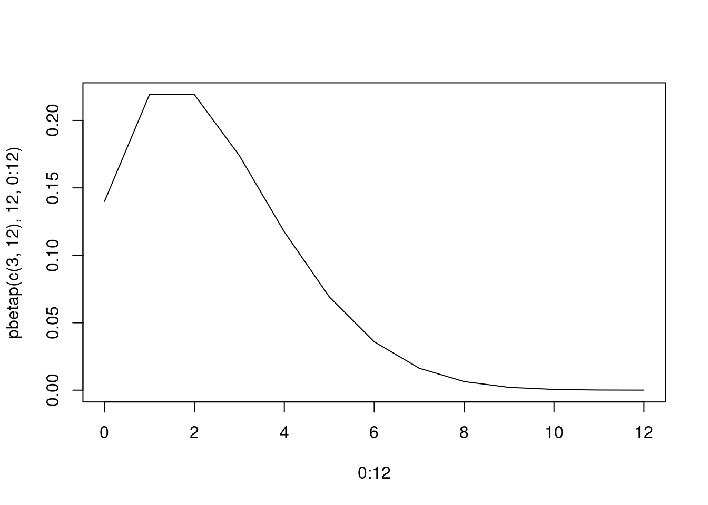
2-5
(a)
mu = seq(20, 70, by = 10)
prior = c(0.1, 0.15, 0.25, 0.25, 0.15, 0.1)
mu## [1] 20 30 40 50 60 70prior## [1] 0.10 0.15 0.25 0.25 0.15 0.10(b)
y = c(38.6, 42.4, 57.5, 40.5, 51.7, 67.1, 33.4, 60.9, 64.1, 40.1, 40.7, 6.4)
ybar = mean(y)
ybar## [1] 45.28333(c)
likelihood = function (mu) exp(-1 * length(y) / (2 * 100) * (mu - ybar)^2)
like = likelihood(mu)
like## [1] 2.201480e-17 8.192991e-07 1.873425e-01 2.632064e-01 2.272076e-06 1.205079e-16(d)
post = prior * like
post = post / sum(post)
post## [1] 1.954479e-17 1.091063e-06 4.158078e-01 5.841881e-01 3.025731e-06 1.069871e-16(e)
dist = cbind(mu, post)
dist## mu post
## [1,] 20 1.954479e-17
## [2,] 30 1.091063e-06
## [3,] 40 4.158078e-01
## [4,] 50 5.841881e-01
## [5,] 60 3.025731e-06
## [6,] 70 1.069871e-16discint(dist, 0.8)## $prob
## [1] 0.9999959
##
## $set
## [1] 40 502-6
(a)
lambda = c(0.5, 1, 1.5, 2, 2.5, 3)
prior = c(0.1, 0.2, 0.3, 0.2, 0.15, 0.05)
likelihood = function (lambda) exp(-6 * lambda) * (6 * lambda)^12
post = prior * likelihood(lambda)
post = post / sum(post)
cbind(lambda, prior, round(post, 2))## lambda prior
## [1,] 0.5 0.10 0.00
## [2,] 1.0 0.20 0.04
## [3,] 1.5 0.30 0.36
## [4,] 2.0 0.20 0.37
## [5,] 2.5 0.15 0.20
## [6,] 3.0 0.05 0.03(b)
\[ p(y|\lambda) = \exp{(-\lambda)}\frac{\lambda^y}{y!} \]
7 日間故障が起きない確率は、\(p(y=0)^7\)
\[ p(y=0|\lambda)^7 = \exp{(-\lambda)}^7 = \exp{(-7\lambda)} \]
よって、予測確率は
\[ p(y=0) = \sum_{\lambda} p(y=0|\lambda) p(\lambda) \]
predict = 0
for (i in 1:length(lambda)) {
predict = predict + exp(-7 * lambda[i]) * post[i]
}
predict## [1] 4.640932e-053-1
y = c(0, 10, 9, 8 ,11, 3, 3, 8, 8 ,11)(a)
grid = seq(-2, 12, by = 0.1)
grid## [1] -2.0 -1.9 -1.8 -1.7 -1.6 -1.5 -1.4 -1.3 -1.2 -1.1 -1.0 -0.9 -0.8 -0.7 -0.6 -0.5 -0.4 -0.3 -0.2 -0.1 0.0
## [22] 0.1 0.2 0.3 0.4 0.5 0.6 0.7 0.8 0.9 1.0 1.1 1.2 1.3 1.4 1.5 1.6 1.7 1.8 1.9 2.0 2.1
## [43] 2.2 2.3 2.4 2.5 2.6 2.7 2.8 2.9 3.0 3.1 3.2 3.3 3.4 3.5 3.6 3.7 3.8 3.9 4.0 4.1 4.2
## [64] 4.3 4.4 4.5 4.6 4.7 4.8 4.9 5.0 5.1 5.2 5.3 5.4 5.5 5.6 5.7 5.8 5.9 6.0 6.1 6.2 6.3
## [85] 6.4 6.5 6.6 6.7 6.8 6.9 7.0 7.1 7.2 7.3 7.4 7.5 7.6 7.7 7.8 7.9 8.0 8.1 8.2 8.3 8.4
## [106] 8.5 8.6 8.7 8.8 8.9 9.0 9.1 9.2 9.3 9.4 9.5 9.6 9.7 9.8 9.9 10.0 10.1 10.2 10.3 10.4 10.5
## [127] 10.6 10.7 10.8 10.9 11.0 11.1 11.2 11.3 11.4 11.5 11.6 11.7 11.8 11.9 12.0(b)
post = c()
for (i in 1:length(grid)) {
post = c(post, prod(1 / (1 + (y - grid[i])^2)))
}
post = post / sum(post)
post## [1] 1.126701e-12 1.496731e-12 1.998369e-12 2.681960e-12 3.618341e-12 4.907571e-12 6.691425e-12 9.171224e-12
## [9] 1.263306e-11 1.748306e-11 2.429564e-11 3.387761e-11 4.734937e-11 6.624058e-11 9.259000e-11 1.290277e-10
## [17] 1.788063e-10 2.457439e-10 3.340655e-10 4.481838e-10 5.925432e-10 7.716980e-10 9.907641e-10 1.256265e-09
## [25] 1.577282e-09 1.966808e-09 2.443283e-09 3.032471e-09 3.769918e-09 4.704408e-09 5.902894e-09 7.457609e-09
## [33] 9.496316e-09 1.219707e-08 1.580947e-08 2.068510e-08 2.732094e-08 3.642051e-08 4.897829e-08 6.639260e-08
## [41] 9.060846e-08 1.242817e-07 1.709331e-07 2.350204e-07 3.217946e-07 4.367471e-07 5.844460e-07 7.667233e-07
## [49] 9.805828e-07 1.216761e-06 1.460147e-06 1.692662e-06 1.897806e-06 2.064831e-06 2.190700e-06 2.279372e-06
## [57] 2.339409e-06 2.381300e-06 2.415471e-06 2.451242e-06 2.496573e-06 2.558281e-06 2.642503e-06 2.755231e-06
## [65] 2.902879e-06 3.092862e-06 3.334235e-06 3.638441e-06 4.020242e-06 4.498945e-06 5.100067e-06 5.857626e-06
## [73] 6.817372e-06 8.041376e-06 9.614637e-06 1.165467e-05 1.432560e-05 1.785902e-05 2.258530e-05 2.898085e-05
## [81] 3.774050e-05 4.988895e-05 6.695444e-05 9.124112e-05 1.262594e-04 1.774089e-04 2.530649e-04 3.663029e-04
## [89] 5.376134e-04 7.991090e-04 1.200852e-03 1.819899e-03 2.772146e-03 4.225372e-03 6.408220e-03 9.603697e-03
## [97] 1.410919e-02 2.014539e-02 2.771668e-02 3.647081e-02 4.565149e-02 5.422549e-02 6.116538e-02 6.574884e-02
## [105] 6.771668e-02 6.723693e-02 6.474535e-02 6.077250e-02 5.582661e-02 5.034240e-02 4.467224e-02 3.909187e-02
## [113] 3.380540e-02 2.894759e-02 2.458832e-02 2.074307e-02 1.738861e-02 1.448031e-02 1.196713e-02 9.801610e-03
## [121] 7.944263e-03 6.363233e-03 5.031358e-03 3.923044e-03 3.012578e-03 2.274241e-03 1.683455e-03 1.217945e-03
## [129] 8.581987e-04 5.871043e-04 3.891602e-04 2.498625e-04 1.556626e-04 9.443623e-05 5.606765e-05 3.275997e-05
## [137] 1.894430e-05 1.089840e-05 6.264988e-06 3.611696e-06 2.093835e-06(c)
plot(grid, post, type = "l")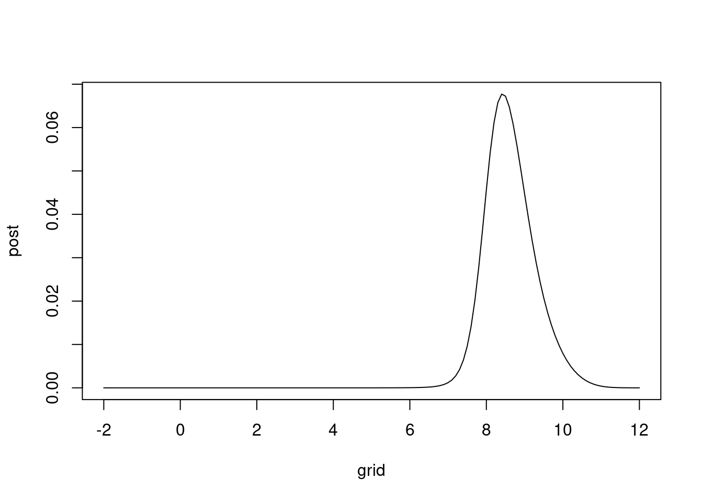
(d)
ps = sample(grid, replace = TRUE, prob = post)
hist(ps)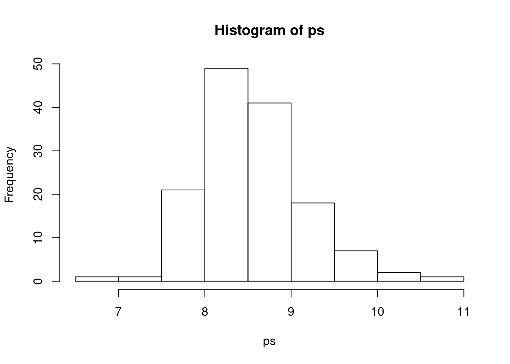
mean(ps)## [1] 8.588652sd(ps)## [1] 0.61051413-2
(a)
\[ g(\lambda|data) \propto \lambda^{-n-1} \exp{(-\frac{s}{\lambda})} \]
\[ \theta = \frac{1}{\lambda} \\ \begin{aligned} g(\theta|data) &\propto \theta^{n+1} \exp{(-s \theta)} \cdot |\frac{d\lambda}{d\theta}| \\ &= \theta^{n+1} \exp{(-s \theta)} \cdot |\frac{d}{d\theta}\theta^{-1}| \\ &= \theta^{n+1} \exp{(-s \theta)} \cdot |-1 \cdot \theta^{-2}| \\ &= \theta^{n-1} \exp{(-s \theta)} \\ \end{aligned} \]
(b)
1つの電球が切れるまでの時間を \(X\) とすると、\(X \sim Exp(x|\beta)\) と考えられる．
x = c(751, 594, 1213, 1126, 819)
n = length(x)
s = sum(x)
theta = rgamma(1000, n, s)
hist(theta)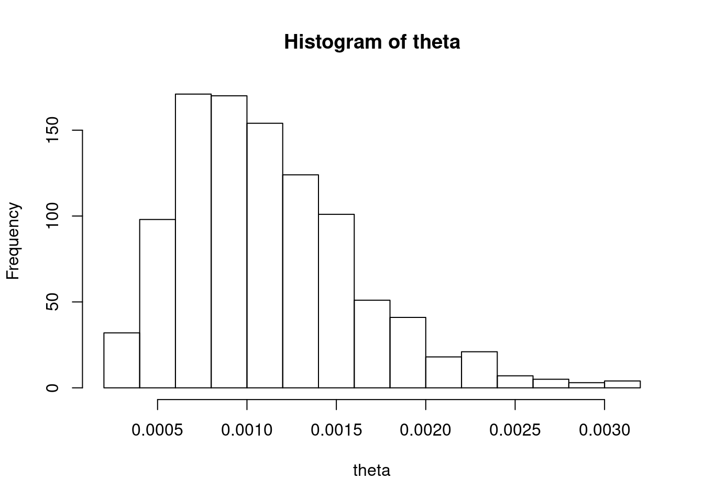
(c)
lambda = 1 / theta
hist(lambda)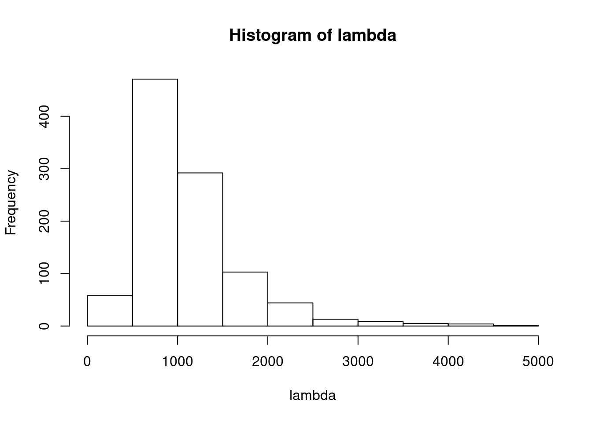
(d)
length(lambda[lambda > 1000]) / 1000## [1] 0.4713-3
\[ \begin{aligned} g(N|y) &\propto \frac{1}{N^n}, \quad y_{(n)} \le N \le B \\ \end{aligned} \]
ここで、\(N\) は最大値の分布であることから、\(y_1, \ldots, y_n\) を観測した際には、初期の候補 \(1 \le N \le B\) から上記へと分布が縮小する．(観測値の最大値以上の値になる)
(a)
n = 5
y = c(43, 24, 100, 35, 85)
B = 200
grid = seq(max(y), B, by = 1)
post = 1 / grid^n
post = post / sum(post)
plot(grid, post)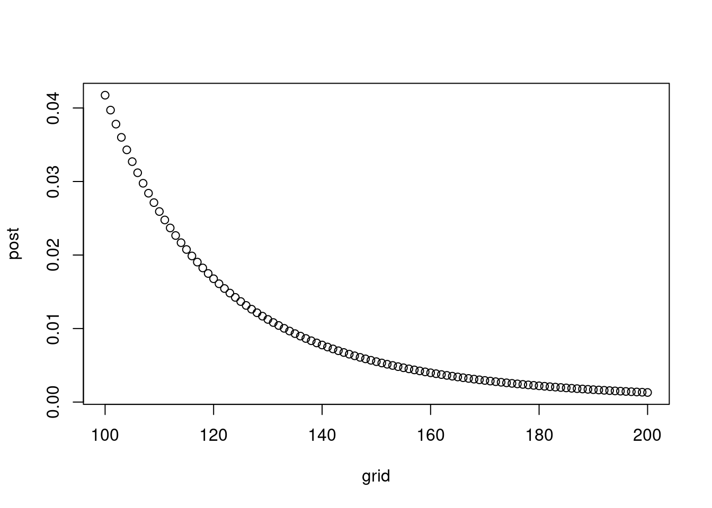
(b)
N = sample(grid, size = 1000, replace = TRUE, prob = post)mean(N)## [1] 125.043sd(N)## [1] 23.26539(c)
length(N[N > 150]) / 1000## [1] 0.1583-4
(a)
P1
m = 1000
p1 = rbeta(m, 100, 100)
hist(p1)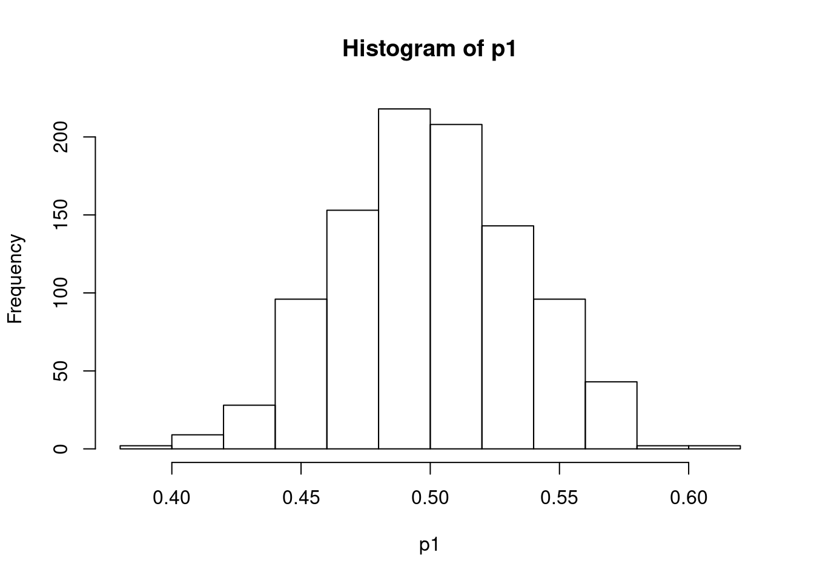
length(p1[0.44 < p1 & p1 < 0.56]) / m## [1] 0.914P2
q = function (p) 0.9 * dbeta(p, 500, 500) + 0.1 * dbeta(p, 1, 1)
p = seq(0.4, 0.6, length = 1000)
plot(p, q(p))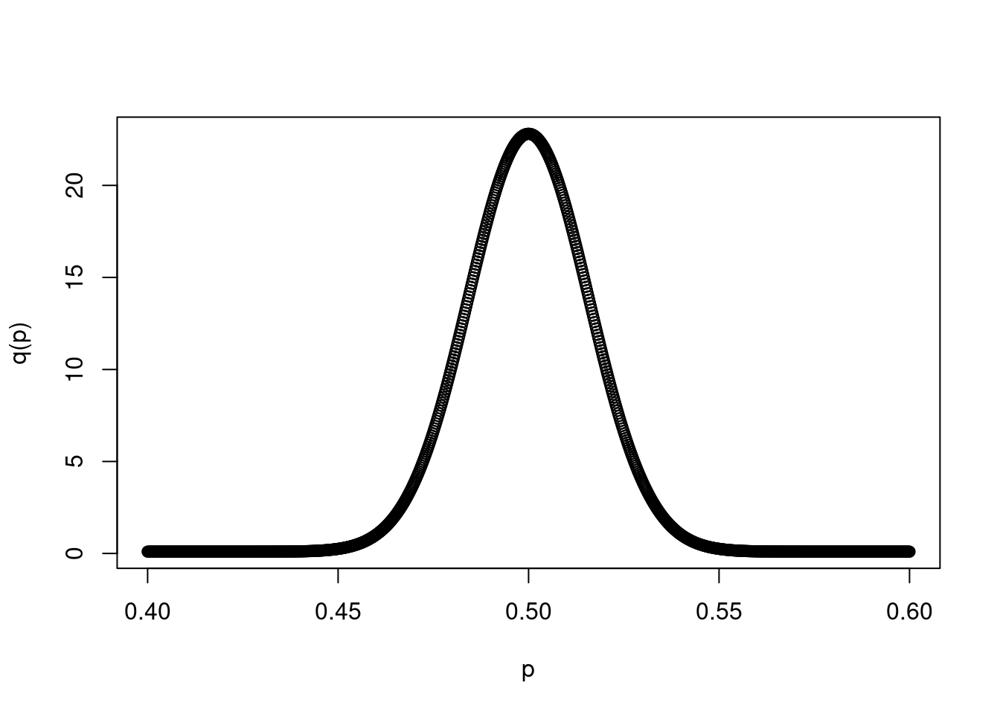
m = 10000 # 1000 では分布の形を見るのには少ない
p2_sampling = function () {
x = sample(c(0, 1), 1, prob = c(0.1, 0.9))
if (x == 1) {
return(rbeta(1, 500, 500))
} else {
return(rbeta(1, 1, 1))
}
}
p2 = replicate(m, p2_sampling())
hist(p2, xlim = c(0.4, 0.6), breaks=seq(0, 1, 0.005))
length(p2[0.44 < p2 & p2 < 0.56]) / m## [1] 0.9121(b)
尤度は以下のようになる.
\[ L(p) = \binom{100}{45} p^{45} (1-p)^{55} \]
P1
事後分布は、事前分布が \(Beta(100, 100)\) で、表が 45 回出ているので、\(Beta(145, 155)\) となる．
\[ \begin{aligned} p(p|data) &\propto L(p) g(p) \\ &= \binom{100}{45} p^{45} (1-p)^{55} Beta(p|100, 100) \\ &\propto p^{45} (1-p)^{55} p^{100-1} (1-p)^{100-1} \\ &= p^{45 + 100 - 1} (1-p)^{55 + 100 - 1} \\ \end{aligned} \]
p1 = rbeta(1000, 145, 155)
hist(p1)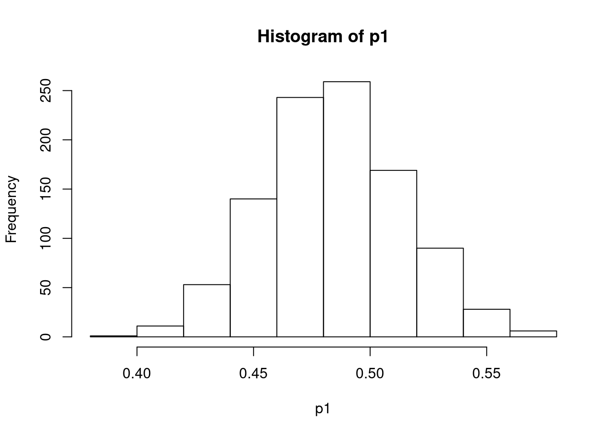
quantile(p1, c(0.05, 0.95))## 5% 95%
## 0.4348357 0.5342714P2
事後分布は、以下のようになる．
\[ \begin{aligned} p(p|data) &\propto L(p) g(p) \\ &= \binom{100}{45} p^{45} (1-p)^{55} \{ 0.9 Beta(p|500, 500) + 0.1 Beta(p|1,1) \} \\ &= 0.9 \cdot \binom{100}{45} p^{45} (1-p)^{55} Beta(p|500, 500) + 0.1 \cdot \binom{100}{45} p^{45} (1-p)^{55} Beta(p|1,1) \\ &= 0.9 \cdot \binom{100}{45} p^{45} (1-p)^{55} \frac{1}{B(500, 500)} p^{500 - 1} (1-p)^{500 - 1} + 0.1 \cdot \binom{100}{45} p^{45} (1-p)^{55} \frac{1}{B(1, 1)} p^{1 - 1} (1-p)^{1 - 1} \\ &\propto 0.9 \cdot \frac{1}{B(500, 500)} p^{500 + 45 - 1} (1-p)^{500 + 55 - 1} + 0.1 \cdot \frac{1}{B(1, 1)} p^{1 + 45 - 1} (1-p)^{1 + 55 - 1} \\ &= 0.9 \cdot \frac{1}{B(500, 500)} p^{500 + 45 - 1} (1-p)^{500 + 55 - 1} + 0.1 \cdot p^{1 + 45 - 1} (1-p)^{1 + 55 - 1} \\ &= 0.9 \cdot \frac{B(545, 555)}{B(500, 500)} \frac{1}{B(545, 555)} p^{500 + 45 - 1} (1-p)^{500 + 55 - 1} + 0.1 \cdot B(46, 56) \frac{1}{B(46, 56)} p^{1 + 45 - 1} (1-p)^{1 + 55 - 1} \\ &= 0.9 \cdot \frac{B(545, 555)}{B(500, 500)} Beta(p|545, 555) + 0.1 \cdot B(46, 56) Beta(p|46, 56) \\ \end{aligned} \]
\(\int Beta(p|545, 555) dp = 1, \int Beta(p|46, 56) dp = 1\) より、混合比率に関しては、混合比率を \(\gamma\) とすると、以下の式になる．
\[ \gamma : 1 - \gamma = 0.9 \cdot \frac{B(545, 555)}{B(500, 500)} : 0.1 \cdot B(46, 56) \]
\[ \begin{aligned} (1 - \gamma) \cdot (0.9 \cdot \frac{B(545, 555)}{B(500, 500)}) &= \gamma \cdot 0.1 \cdot B(46, 56) \\ (0.9 \cdot \frac{B(545, 555)}{B(500, 500)}) - \gamma \cdot (0.9 \cdot \frac{B(545, 555)}{B(500, 500)}) &= \gamma \cdot 0.1 \cdot B(46, 56) \\ \{ (0.9 \cdot \frac{B(545, 555)}{B(500, 500)}) + 0.1 \cdot B(46, 56) \} \gamma &= (0.9 \cdot \frac{B(545, 555)}{B(500, 500)}) \end{aligned} \]
\[ \gamma = \frac{(0.9 \cdot \frac{B(545, 555)}{B(500, 500)})}{(0.9 \cdot \frac{B(545, 555)}{B(500, 500)}) + 0.1 \cdot B(46, 56)} \]
よって、各項の係数は以下のようになる．
tmp = exp(lbeta(545, 555) - lbeta(500, 500)) # overflow するので、log で計算
gamma = (0.9 * tmp) / (0.9 * tmp + 0.1 * beta(46, 56))
gamma## [1] 0.97776151 - gamma## [1] 0.02223847m = 10000 # 1000 では分布の形を見るのには少ない
p2_sampling = function () {
x = sample(c(0, 1), 1, prob = c(0.0222, 0.9778))
if (x == 1) {
return(rbeta(1, 545, 555))
} else {
return(rbeta(1, 46, 56))
}
}
p2 = replicate(m, p2_sampling())
hist(p2, xlim = c(0.4, 0.6), breaks=seq(0, 1, 0.005))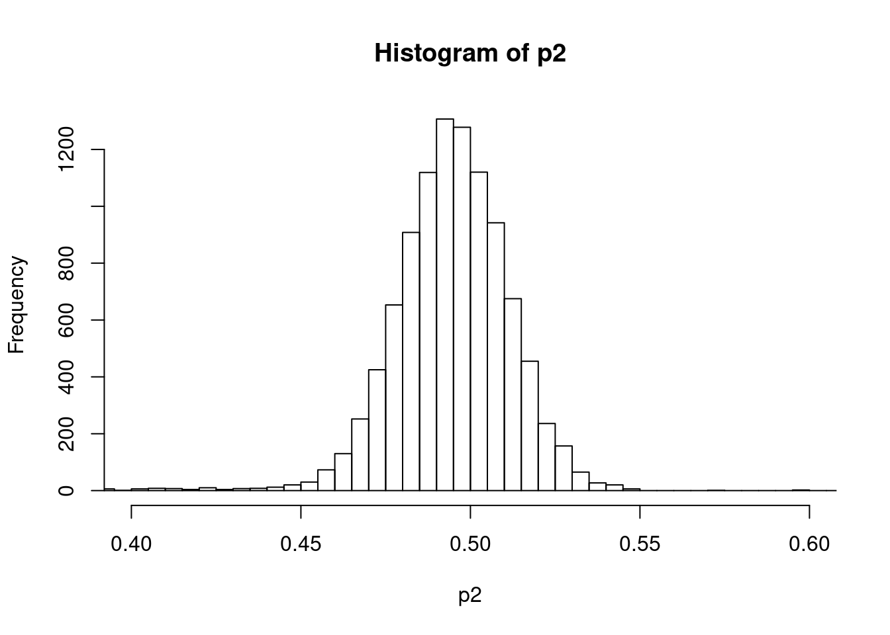
quantile(p2, c(0.05, 0.95))## 5% 95%
## 0.4683059 0.5202097LearnBayesを用いると以下になる．
probs = c(0.9, 0.1)
beta.par1 = c(500, 500)
beta.par2 = c(1, 1)
betapar = rbind(beta.par1, beta.par2)
data = c(45, 55)
post = binomial.beta.mix(probs, betapar, data)
post## $probs
## beta.par1 beta.par2
## 0.97776153 0.02223847
##
## $betapar
## [,1] [,2]
## beta.par1 545 555
## beta.par2 46 56(c)
P1
p1 = rbeta(1000, 130, 170)
hist(p1)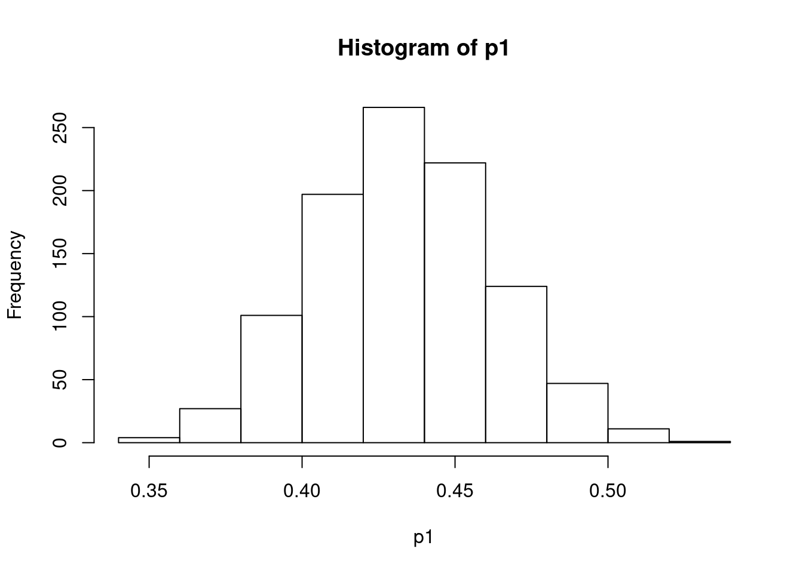
quantile(p1, c(0.05, 0.95))## 5% 95%
## 0.3852962 0.4818855P2
同様な計算から、
\[ \begin{aligned} p(p|data) &\propto L(p) g(p) \\ &= 0.9 \cdot \frac{B(530, 570)}{B(500, 500)} f_B(p;530, 570) + 0.1 \cdot B(31, 71) f_B(p;31, 71) \\ \end{aligned} \]
混合比率に関しても同様に、
\[ \gamma = \frac{(0.9 \cdot \frac{B(530, 570)}{B(500, 500)})}{(0.9 \cdot \frac{B(530, 570)}{B(500, 500)}) + 0.1 \cdot B(31, 71)} \]
よって、各項の係数は以下のようになる．
tmp = exp(lbeta(530, 570) - lbeta(500, 500)) # overflow するので、log で計算
gamma = (0.9 * tmp) / (0.9 * tmp + 0.1 * beta(31, 71))
gamma## [1] 0.03993071 - gamma## [1] 0.9600693m = 10000 # 1000 では分布の形を見るのには少ない
p2_sampling = function () {
x = sample(c(0, 1), 1, prob = c(0.0399, 0.9601))
if (x == 1) {
return(rbeta(1, 530, 570))
} else {
return(rbeta(1, 31, 71))
}
}
p2 = replicate(m, p2_sampling())
hist(p2, xlim = c(0.4, 0.6), breaks=seq(0, 1, 0.005))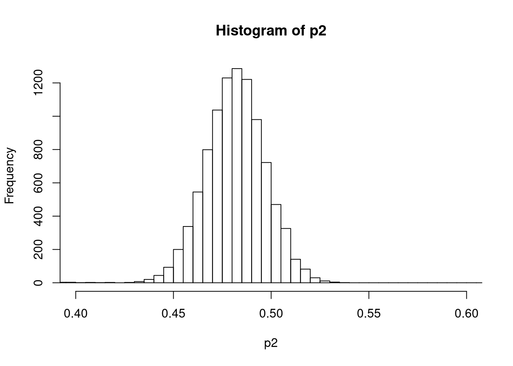
quantile(p2, c(0.05, 0.95))## 5% 95%
## 0.4458550 0.5062934LearnBayesを用いると以下になる．
probs = c(0.9, 0.1)
beta.par1 = c(500, 500)
beta.par2 = c(1, 1)
betapar = rbind(beta.par1, beta.par2)
data = c(30, 70)
post = binomial.beta.mix(probs, betapar, data)
post## $probs
## beta.par1 beta.par2
## 0.0399307 0.9600693
##
## $betapar
## [,1] [,2]
## beta.par1 530 570
## beta.par2 31 71(d)
| 45 | 30 | |
|---|---|---|
| P1 | 0.4348357 ~ 0.5342714 | 0.3852962 ~ 0.4818855 |
| P2 | 0.4683059 ~ 0.5202097 | 0.4458550 ~ 0.5062934 |
上記の表から、P2の方が頑健性が高い．
3-5
(a)
\[ p(X = 8) = \binom{20}{8} p^{8} (1-p)^{20 - 8} \]
dbinom(8, 20, 0.2)## [1] 0.02216088choose(20, 8) * (0.2) ^ 8 * (1 - 0.2) ^ (20 - 8)## [1] 0.02216088(b)
\[ g(p) = 0.5I(p = 0.2) + 0.5I(p \ne 0.2) Beta(p|1,4) \]
q = function (p) {
if (p == 0.2) {
return(0.5)
} else {
return(0.5 * dbeta(p, 1, 4))
}
}
p = seq(0, 1, by = 0.01)
plot(p, lapply(p, q), type = "l")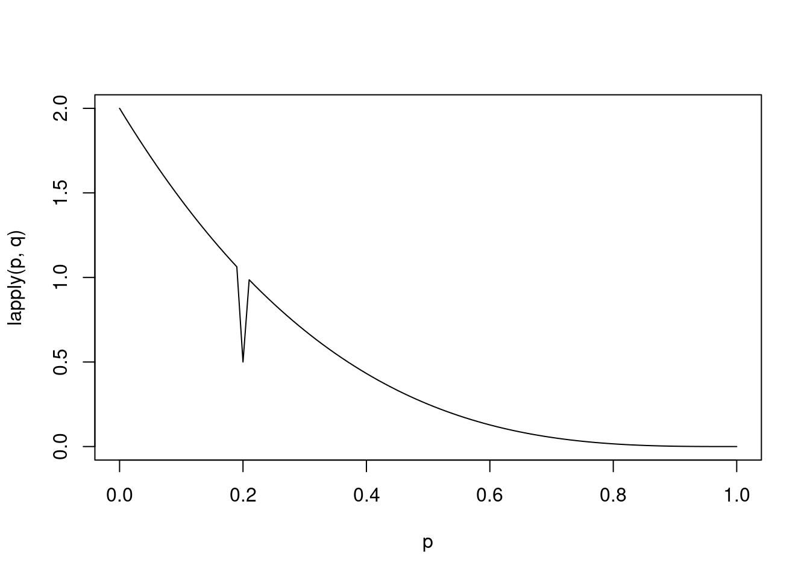
\[ \begin{aligned} p(p|data) &\propto L(p) g(p) \\ &= \binom{20}{8} p^{8} (1-p)^{20 - 8} \{ 0.5I(p = 0.2) + 0.5I(p \ne 0.2) Beta(p|1,4) \} \\ &= \binom{20}{8} p^{8} (1-p)^{20 - 8} \frac{1}{2} I(p = 0.2) + \binom{20}{8} p^{8} (1-p)^{20 - 8} \frac{1}{2} I(p \ne 0.2) Beta(p|1,4) \\ &\propto p^{8} (1-p)^{20 - 8} I(p = 0.2) + p^{8} (1-p)^{20 - 8} I(p \ne 0.2) Beta(p|1,4) \\ &= p^{8} (1-p)^{20 - 8} I(p = 0.2) + p^{8} (1-p)^{20 - 8} I(p \ne 0.2) \frac{1}{B(1, 4)} p^{1 - 1} (1 - p)^{4 - 1} \\ &= p^{8} (1-p)^{20 - 8} I(p = 0.2) + I(p \ne 0.2) \frac{1}{B(1, 4)} p^{9 - 1} (1 - p)^{16 - 1} \\ &= p^{8} (1-p)^{20 - 8} I(p = 0.2) + I(p \ne 0.2) \frac{B(9 , 16)}{B(1, 4)} Beta(p|9 ,16) \\ \end{aligned} \]
\(\int Beta(p|9 ,16) = 1\) と \(p^{8} (1-p)^{20 - 8} I(p = 0.2) = (0.2)^8 (1 - 0.2)^{12}\) より、係数に関しては以下のようになる．
\[ \gamma : 1 - \gamma = (0.2)^8 (1 - 0.2)^{12} : \frac{B(9 , 16)}{B(1, 4)} \]
\[ \begin{aligned} (1 - \gamma) \cdot (0.2)^8 (1 - 0.2)^{12} &= \gamma \cdot \frac{B(9 , 16)}{B(1, 4)} \\ (0.2)^8 (1 - 0.2)^{12} - \gamma \cdot (0.2)^8 (1 - 0.2)^{12} &= \gamma \cdot \frac{B(9 , 16)}{B(1, 4)} \\ \end{aligned} \]
\[ \gamma = \frac{(0.2)^8(1 - 0.2)^{12}}{(0.2)^8 (1 - 0.2)^{12} + \frac{B(9 , 16)}{B(1, 4)}} \]
gamma = (0.2 ^ 8 * (1 - 0.2)^12) / (0.2 ^ 8 * (1 - 0.2)^12 + beta(9, 16)/beta(1, 4))
gamma## [1] 0.34103951 - gamma## [1] 0.6589605よって、今回の結果だと、\(p = 0.2\) のときは、0.3410 となる． 一方で、(a) の結果は、0.02216088 である．
q = function (p) {
if (p == 0.2) {
return(0.341)
} else {
return(0.659 * dbeta(p, 9, 16))
}
}
p = seq(0, 1, by = 0.01)
plot(p, lapply(p, q), type = "l")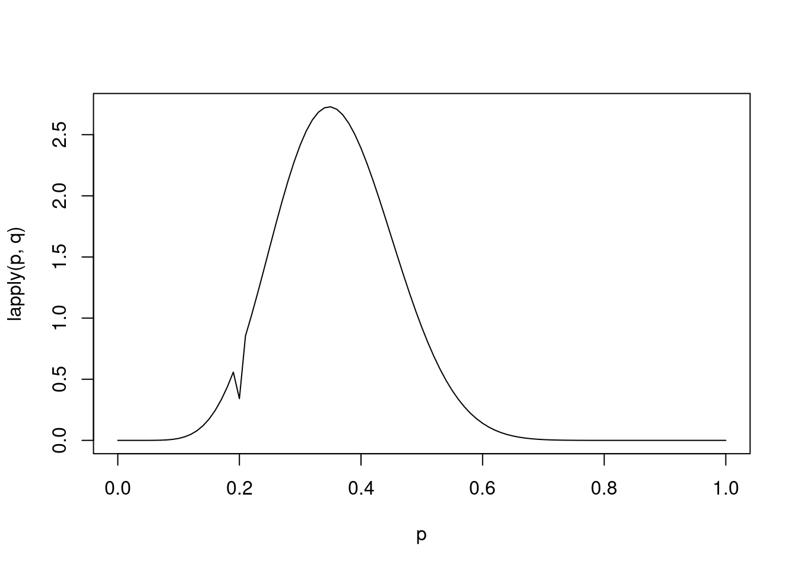
LearnBayes を用いると、以下になる．
pbetat(0.2, .5, c(1, 4), c(8, 12))## $bf
## [1] 0.5175417
##
## $post
## [1] 0.3410395(c)
(1)
\[ g(p) = 0.5I(p = 0.2) + 0.5I(p \ne 0.2) Beta(p|0.5,2) \]
q = function (p) {
if (p == 0.2) {
return(0.5)
} else {
return(0.5 * dbeta(p, 0.5, 2))
}
}
p = seq(0, 1, by = 0.01)
plot(p, lapply(p, q), type = "l")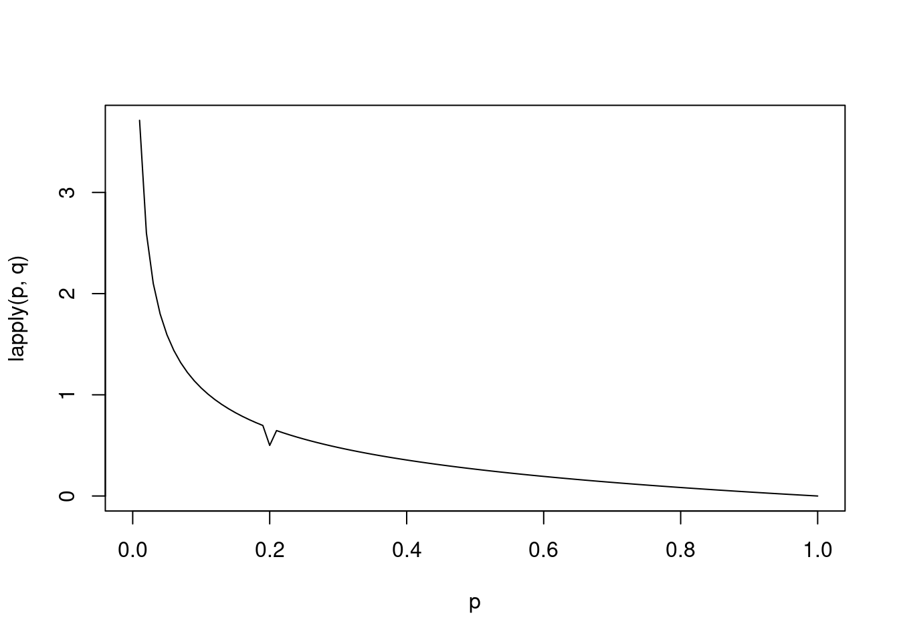
\[ \begin{aligned} p(p|data) &\propto L(p) g(p) \\ &= p^{8} (1-p)^{20 - 8} I(p = 0.2) + I(p \ne 0.2) \frac{B(8.5, 14)}{B(0.5, 2)} Beta(p|8.5, 14) \\ \end{aligned} \]
\(\int Beta(p|8.5, 14) = 1\) と \(p^{8} (1-p)^{20 - 8} I(p = 0.2) = (0.2)^8 (1 - 0.2)^{12}\) より、係数に関しては以下のようになる．
\[ \begin{aligned} \gamma : 1 - \gamma = (0.2)^8 (1 - 0.2)^{12} : \frac{B(8.5, 14)}{B(0.5, 2)} \\ \gamma = \frac{(0.2)^8(1 - 0.2)^{12}}{(0.2)^8 (1 - 0.2)^{12} + \frac{B(8.5, 14)}{B(0.5, 2)}} \end{aligned} \]
gamma = (0.2 ^ 8 * (1 - 0.2)^12) / (0.2 ^ 8 * (1 - 0.2)^12 + beta(8.5, 14)/beta(0.5, 2))
gamma## [1] 0.39007521 - gamma## [1] 0.6099248pbetat(0.2, .5, c(0.5, 2), c(8, 12))## $bf
## [1] 0.6395464
##
## $post
## [1] 0.3900752(2)
\[ g(p) = 0.5I(p = 0.2) + 0.5I(p \ne 0.2) Beta(p|2, 8) \]
q = function (p) {
if (p == 0.2) {
return(0.5)
} else {
return(0.5 * dbeta(p, 2, 8))
}
}
p = seq(0, 1, by = 0.01)
plot(p, lapply(p, q), type = "l")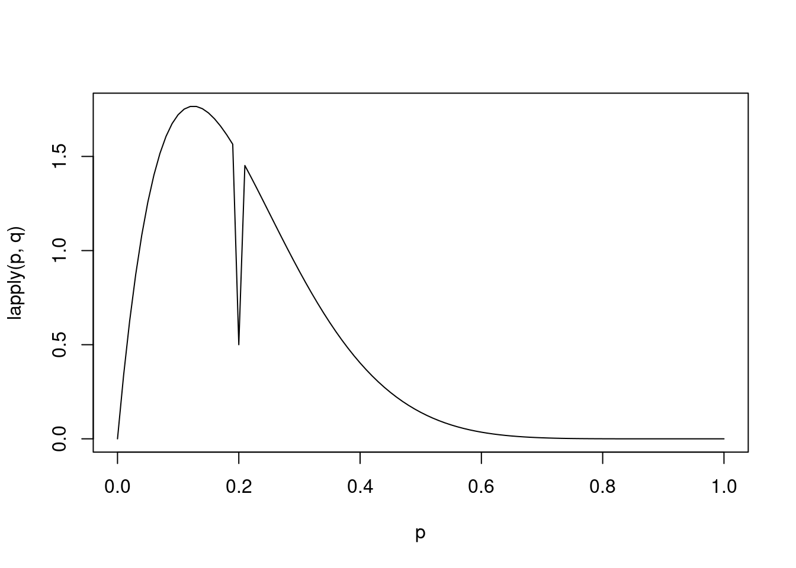
\[ \begin{aligned} p(p|data) &\propto L(p) g(p) \\ &= p^{8} (1-p)^{20 - 8} I(p = 0.2) + I(p \ne 0.2) \frac{B(10, 20)}{B(2, 8)} Beta(p|10, 20) \\ \end{aligned} \]
\(\int Beta(p|8.5, 14) = 1\) と \(p^{8} (1-p)^{20 - 8} I(p = 0.2) = (0.2)^8 (1 - 0.2)^{12}\) より、係数に関しては以下のようになる．
\[ \gamma : 1 - \gamma = (0.2)^8 (1 - 0.2)^{12} : \frac{B(10, 20)}{B(2, 8)} \\ \gamma = \frac{(0.2)^8(1 - 0.2)^{12}}{(0.2)^8 (1 - 0.2)^{12} + \frac{B(10, 20)}{B(2, 8)}} \]
gamma = (0.2 ^ 8 * (1 - 0.2)^12) / (0.2 ^ 8 * (1 - 0.2)^12 + beta(10, 20)/beta(2, 8))
gamma## [1] 0.3285911 - gamma## [1] 0.671409pbetat(0.2, .5, c(2, 8), c(8, 12))## $bf
## [1] 0.4894051
##
## $post
## [1] 0.328591(3)
\[ g(p) = 0.5I(p = 0.2) + 0.5I(p \ne 0.2) Beta(p|8, 32) \]
q = function (p) {
if (p == 0.2) {
return(0.5)
} else {
return(0.5 * dbeta(p, 8, 32))
}
}
p = seq(0, 1, by = 0.01)
plot(p, lapply(p, q), type = "l")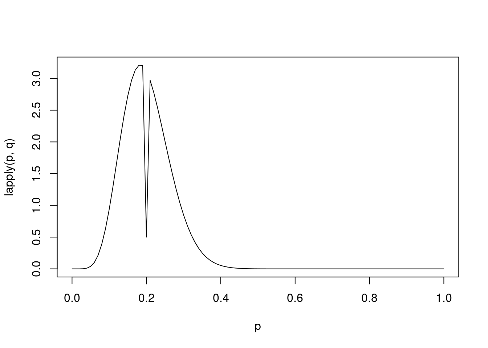
\[ \begin{aligned} p(p|data) &\propto L(p) g(p) \\ &= p^{8} (1-p)^{20 - 8} I(p = 0.2) + I(p \ne 0.2) \frac{B(16, 44)}{B(8, 32)} Beta(p|16, 44) \\ \end{aligned} \]
\(\int Beta(p|16, 44) = 1\) と \(p^{8} (1-p)^{20 - 8} I(p = 0.2) = (0.2)^8 (1 - 0.2)^{12}\) より、係数に関しては以下のようになる．
\[ \begin{aligned} \gamma : 1 - \gamma = (0.2)^8 (1 - 0.2)^{12} : \frac{B(16, 44)}{B(8, 32)} \\ \gamma = \frac{(0.2)^8(1 - 0.2)^{12}}{(0.2)^8 (1 - 0.2)^{12} + \frac{B(16, 44)}{B(8, 32)}} \end{aligned} \]
gamma = (0.2 ^ 8 * (1 - 0.2)^12) / (0.2 ^ 8 * (1 - 0.2)^12 + beta(16, 44)/beta(8, 32))
gamma## [1] 0.38553371 - gamma## [1] 0.6144663pbetat(0.2, .5, c(8, 32), c(8, 12))## $bf
## [1] 0.6274287
##
## $post
## [1] 0.3855337(d)
20回中8回当てる確率は 0.3 程度と考えられるので、ESP があるとは言えない．
3-6
速度平均 \(\mu\)、標準偏差 \(\sigma = 10\) で正規分布であるので、70 マイルで追い越す確率は \(P(\mu < 70) = \Phi(70, \mu, 10)\) である．よって、尤度は以下のように表せる.
\[ L(\mu) \propto \Phi(70, \mu, 10)^s (1 - \Phi(70, \mu, 10))^f \]
(a)
事前分布は一様分布(\(f(x) = C \quad (-\infty < x < \infty)\))であるとすると、
\[ \begin{aligned} p(\mu|data) &\propto L(\mu) q(\mu) \\ &= C \cdot \Phi(70, \mu, 10) (1 - \Phi(70, \mu, 10))^{17} \\ &\propto \Phi(70, \mu, 10) (1 - \Phi(70, \mu, 10))^{17} \end{aligned} \]
# グリッド近似を用いる
mu = seq(0, 200, by = 0.1) # 速度は 0 以上であるので、加えて、最大値は 200 とした．
p = function (mu) {
pnorm(70, mu, 10) * (1 - pnorm(70, mu, 10))^17
}
plot(mu, p(mu) / sum(p(mu)), type = "l")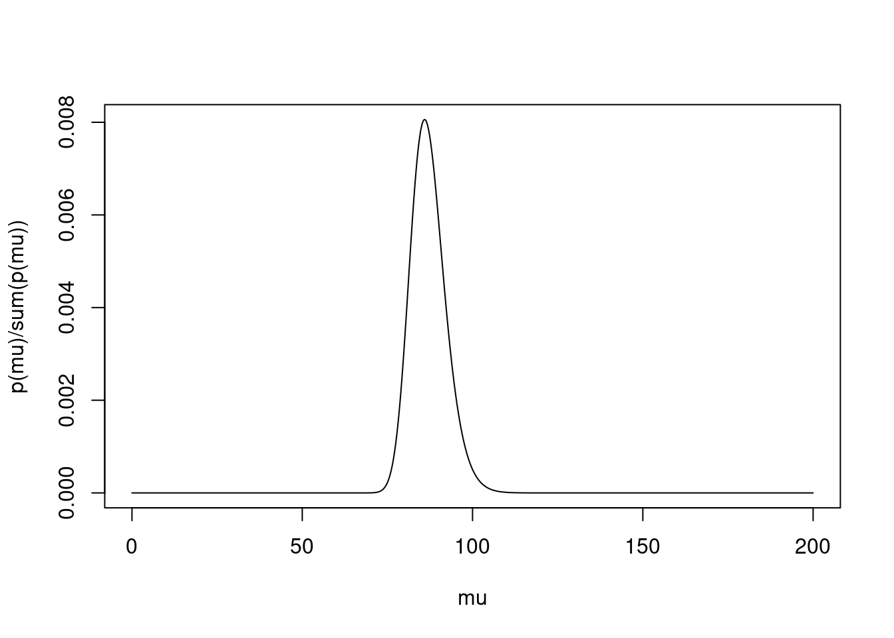
(b)
グリッド近似した際の、各グリッドの値を \(\mu_i\)、グリッド数を \(N\) とすると、事後平均は以下のように表せる.
\[ Mean = \sum_{i=1}^N \mu_i \cdot p(\mu_i) \]
# グリッド近似を用いる
mu = seq(0, 200, by = 0.1) # 速度は 0 以上であるので、加えて、最大値は 200 とした．
p = function (mu) {
pnorm(70, mu, 10) * (1 - pnorm(70, mu, 10))^17
}
post = p(mu) / sum(p(mu))
sum(mu * post) # 事後平均## [1] 87.11109(c)
\(P(\mu > 80)\) を求めればよいので、以下のようになる．
mu = seq(0, 150, by = 0.1) # 速度は 0 以上であるので、加えて、最大値は 200 とした．
p = function (mu) {
pnorm(70, mu, 10) * (1 - pnorm(70, mu, 10))^17
}
post = p(mu) / sum(p(mu))
sum(cbind(mu, post)[mu > 80, 2])## [1] 0.9300158\(P(\mu > 80) = 1 - P(\mu \le 80) = 1 - \int_{-\infty}^{80} p(\mu) d\mu\) の数値積分は以下のようになる．
p = function (mu) {
pnorm(70, mu, 10) * (1 - pnorm(70, mu, 10))^17
}
z = integrate(p, 0, 150)$value # 正規化定数
int = integrate(p, -Inf, 80)
1 - int$value / z## [1] 0.931637480 マイル近傍の事後分布は以下のようになる.
mu = seq(0, 200, by = 0.1)
p = function (mu) {
pnorm(70, mu, 10) * (1 - pnorm(70, mu, 10))^17
}
post = p(mu) / sum(p(mu))
plot(mu, post, xlim = c(70, 110), type = "l")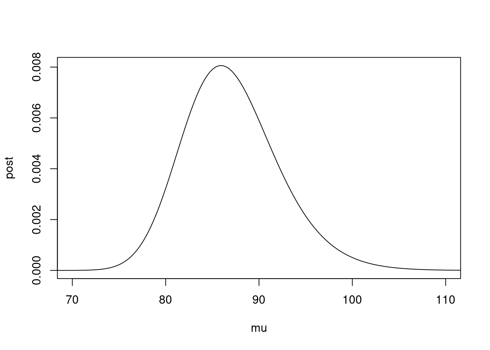
3-7
(a)
\[ g(\lambda) = 0.5 \cdot gamma(\lambda|1.5, 1000) + 0.5 \cdot gamma(\lambda|7, 1000) \]
ガンマ分布は以下で定義する．
\[ gamma(\lambda|\alpha, \beta) = \frac{\beta^{\alpha}}{\Gamma(\alpha)} \lambda^{\alpha - 1} \exp{(-\beta\lambda)} \quad (\lambda > 0) \]
lambda = seq(0, 1, by = 0.001)
g = function (lambda) {
0.5 * dgamma(lambda, shape = 1.5, rate = 1000) + 0.5 * dgamma(lambda, shape = 7, rate = 1000)
}
plot(lambda, g(lambda), xlim = c(0, 0.1), type = "l")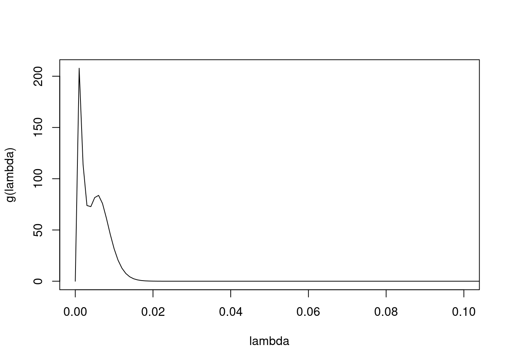
(b)
死亡数 \(y\) は、暴露数 \(e\) と死亡率 \(\lambda\) としたとき、平均 \(e\lambda\) のポアソン分布に従うと考えられる．
\[ p(y) = Po(e\lambda) = \frac{(e\lambda)^{y}}{y!} \exp{(-e\lambda)} \]
よって、\(y = 4, e = 1767\) の時の、尤度は以下の用に表せる．
\[ L(\lambda) = \frac{(1767 \lambda)^{4}}{4!} \exp{(-1767\lambda)} \]
この時、\(\lambda\) の事後分布は以下のようになる．
\[ \begin{aligned} p(\lambda|data) &\propto L(\lambda) g(\lambda) \\ &= \frac{(1767 \lambda)^{4}}{4!} \exp{(-1767\lambda)} \{ 0.5 \cdot gamma(\lambda|1.5, 1000) + 0.5 \cdot gamma(\lambda|7, 1000) \} \\ &\propto \lambda^{4} \exp{(-1767\lambda)} \{gamma(\lambda|1.5, 1000) + gamma(\lambda|7, 1000) \} \\ &= \lambda^{4} \exp{(-1767\lambda)} \{ \frac{1000^{1.5}}{\Gamma(1.5)} \lambda^{1.5 - 1} \exp{(-1000\lambda)} + \frac{1000^{7}}{\Gamma(7)} \lambda^{7 - 1} \exp{(-1000\lambda)} \} \\ &= \frac{1000^{1.5}}{\Gamma(1.5)} \lambda^{1.5 + 4 - 1} \exp{(-2767\lambda)} + \frac{1000^{7}}{\Gamma(7)} \lambda^{7 + 4 - 1} \exp{(-2767\lambda)} \\ &= \frac{1000^{1.5}}{\Gamma(1.5)} \frac{\Gamma(5.5)}{2767^{5.5}} gamma(\lambda|5.5, 2767) + \frac{1000^{7}}{\Gamma(7)} \frac{\Gamma(11)}{2767^{11}} gamma(\lambda|11, 2767) \\ \end{aligned} \]
ここで、混合比率を \(\pi\) とすると、
\[ \begin{aligned} \pi : 1 - \pi = \frac{1000^{1.5}}{\Gamma(1.5)} \frac{\Gamma(5.5)}{2767^{5.5}} : \frac{1000^{7}}{\Gamma(7)} \frac{\Gamma(11)}{2767^{11}} \\ a = \frac{1000^{1.5}}{\Gamma(1.5)} \frac{\Gamma(5.5)}{2767^{5.5}}, b = \frac{1000^{7}}{\Gamma(7)} \frac{\Gamma(11)}{2767^{11}} \\ \pi = \frac{a}{a + b} \end{aligned} \]
a = (1000 ^ 1.5 * gamma(5.5)) / (gamma(1.5) * 2767 ^ 5.5)
b = (1000 ^ 7 * gamma(11)) / (gamma(7) * 2767 ^ 11)
pi = a / (a + b)
pi## [1] 0.75971821 - pi## [1] 0.2402818LearnBayes の場合は以下のようになる．
probs = c(0.5, 0.5)
gamma.par1 = c(1.5, 1000)
gamma.par2 = c(7, 1000)
gammapar = rbind(gamma.par1, gamma.par2)
data = data.frame(t = 1767, y = 4)
post = poisson.gamma.mix(probs, gammapar, data)
post## $probs
## gamma.par1 gamma.par2
## 0.7597182 0.2402818
##
## $gammapar
## [,1] [,2]
## gamma.par1 5.5 2767
## gamma.par2 11.0 2767(c)
lambda = seq(0, 1, by = 0.001)
g = function (lambda) {
0.5 * dgamma(lambda, shape = 1.5, rate = 1000) + 0.5 * dgamma(lambda, shape = 7, rate = 1000)
}
post = function (lambda) {
pi * dgamma(lambda, shape = 5.5, rate = 2767) + (1 - pi) * dgamma(lambda, shape = 11, rate = 2767)
}
plot(lambda, g(lambda), xlim = c(0, 0.02), ylim = c(0, 500), ylab = "", type = "l", lty = 2)
par(new=T)
plot(lambda, post(lambda), xlim = c(0, 0.02), ylim = c(0, 500), ylab = "", type = "l")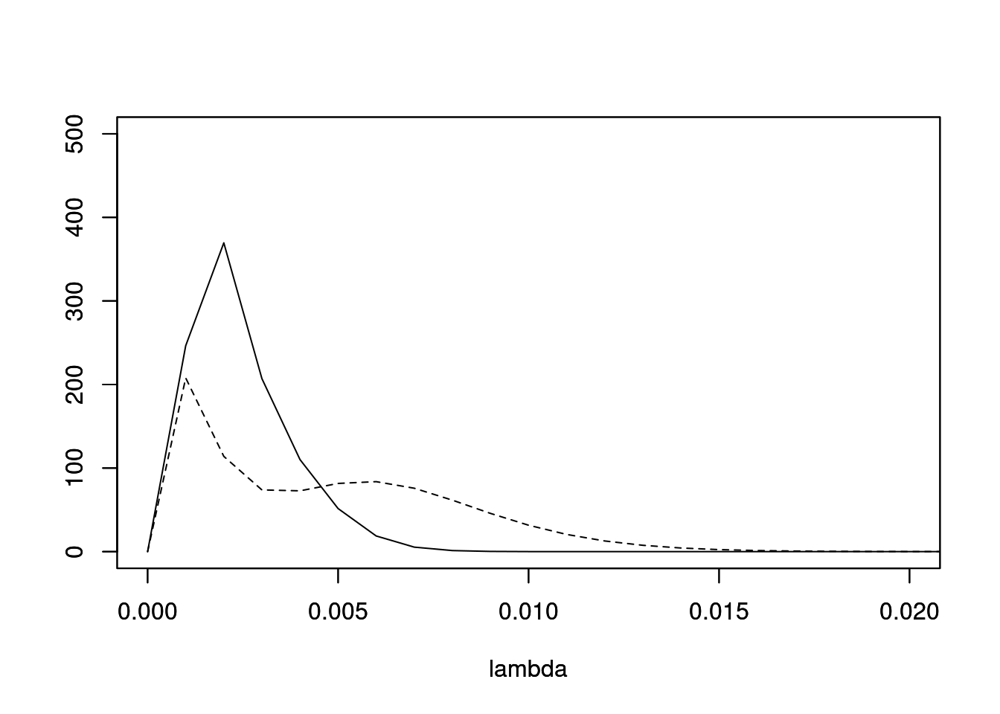
(d)
\(P(\lambda > 0.005) = 1 - P(\lambda \le 0.005) = 1 - \int_0^{0.005} p(\lambda) d\lambda\) である．
# 数値積分
p = function (lambda) {
return(pi * dgamma(lambda, shape = 5.5, rate = 2767) + (1 - pi) * dgamma(lambda, shape = 11, rate = 2767))
}
int = integrate(p, lower = 0, upper = 0.005)
1 - int$value## [1] 0.04766545# サンプリング近似
post_sample = function () {
x = sample(c(0, 1), 1, prob = c(1 - pi, pi))
if (x == 1) {
return(rgamma(1, shape = 5.5, rate = 2767))
} else {
return(rgamma(1, shape = 11, rate = 2767))
}
}
sample = replicate(100000, post_sample())
sum(sample > 0.005) / 100000## [1] 0.04825# グリッド近似
lambda = seq(0, 1, by = 0.000001)
p = function (lambda) {
pi * dgamma(lambda, shape = 5.5, rate = 2767) + (1 - pi) * dgamma(lambda, shape = 11, rate = 2767)
}
post = p(lambda) / sum(p(lambda))
sum(cbind(lambda, post)[lambda > 0.005, 2])## [1] 0.04763969(e)
混合確率は、\(g_1(\lambda), g_2(\lambda)\) のそれぞれ 0.7597182、0.2402818 となっているので、このデータは \(g_1(\lambda)\) に適合していると考えられる．
3-8
\[ f(y:\lambda) = Exp(y|\lambda) \\ F(y;\lambda) = \int_{-\infty}^{y} f(y:\lambda) dy \]
であるとする．
平均 \(\lambda\) の指数分布にしたがう電球 12個のテストする．4番目に短い寿命である \(y_4 = 100\) であるので、1 ~ 3 番目までは 100時間までに切れる確率であるので、\(F(100;\lambda)^3\) とできる． \(y_4 = 100\) となる確率(密度)は \(f(100;\lambda)\) である． 8番目に短い寿命である \(y_8 = 300\) であるので、5 ~ 7 番目までは 100 ~ 300時間までに切れる確率であるので、\((F(300;\lambda) - F(100;\lambda))^3\) とできる．\(y_8 = 300\) となる確率(密度)は \(f(300;\lambda)\) である．9 ~ 12 番目は 300 ~ 時間で切れる確率であるので、\((1 - F(300;\lambda))^4\) であるので、尤度関数は以下になる．
\[ L(\lambda) \propto F(100;\lambda)^3 f(100;\lambda) (F(300;\lambda) - F(100;\lambda))^3 f(100;\lambda) (1 - F(300;\lambda))^4 \]
(a)
事前分布は以下とする．
\[ p(\lambda) \propto \frac{1}{\lambda} \]
事後分布は以下になる．
\[ \begin{aligned} p(\lambda|data) &\propto L(\lambda) p(\lambda) \\ &= F(100;\lambda)^3 f(100;\lambda) (F(300;\lambda) - F(100;\lambda))^3 f(100;\lambda) (1 - F(300;\lambda))^4 \frac{1}{\lambda} \end{aligned} \]
# グリッド近似を用いる
lambda = seq(0.1, 1000, by = 0.1)
p = function (lambda) {
likelihood = pexp(100, 1/lambda)^3 * dexp(100, 1/lambda) * (pexp(300, 1/lambda) - pexp(100, 1/lambda))^3 * dexp(300, 1/lambda) * (1 - pexp(300, 1/lambda))^4
return(likelihood / lambda)
}
post = p(lambda)
post = post / sum(post)
plot(lambda, post, type = "l")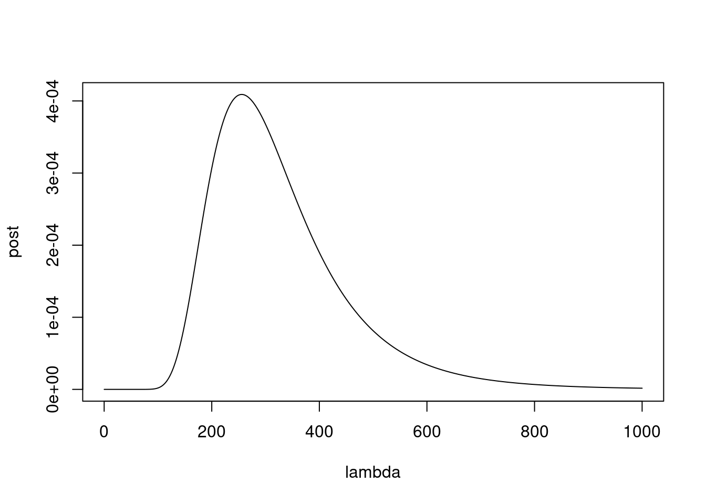
(b)
# グリッド近似を用いる
lambda = seq(0.1, 1000, by = 0.1)
p = function (lambda) {
likelihood = pexp(100, 1/lambda)^3 * dexp(100, 1/lambda) * (pexp(300, 1/lambda) - pexp(100, 1/lambda))^3 * dexp(300, 1/lambda) * (1 - pexp(300, 1/lambda))^4
return(likelihood / lambda)
}
post = p(lambda)
post = post / sum(post)
mu = sum(lambda * post)
mu## [1] 327.2188sqrt(sum((lambda - mu)^2 * post))## [1] 127.6595(c)
# グリッド近似を用いる
lambda = seq(0.1, 1000, by = 0.1)
p = function (lambda) {
likelihood = pexp(100, 1/lambda)^3 * dexp(100, 1/lambda) * (pexp(300, 1/lambda) - pexp(100, 1/lambda))^3 * dexp(300, 1/lambda) * (1 - pexp(300, 1/lambda))^4
return(likelihood / lambda)
}
post = p(lambda)
post = post / sum(post)
sum(cbind(lambda, post)[300 < lambda & lambda < 500, 2])## [1] 0.4059514